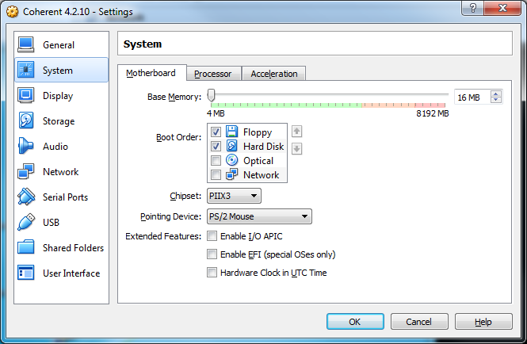

Introduction:
In 1990 Mark Williams Company released COHERENT 3.0, a clone of the UNIX V7 operating system for Intel 286 based systems. I already had a real nice PC with Intel 386 CPU, I passed on the PC XT and PC AT because of the technically bad design of these systems. At this time I was working for Nixdorf Computer and had access to all and any UNIX systems they had there in the labs. Besides the large RISC mainframes the smaller Nixdorf UNIX systems were based on 68020 and 386 CPU's, so I knew that a 386 machine would do what I wanted.I got COHERENT 3.0, installed it on my private 386 box and got hooked. Sure, the system was limited by the MMU of the 286 CPU, processes have a 64KB code and a 64KB data segment, same as UNIX V7 on the PDP-11, but the system was very complete and fun to use. It came with a HDB uucp and soon I had it online with an analog modem, exchanging email and Usenet news via uucp. This also enabled me to get access to sources for applications and tools written for UNIX systems, that were shared over the uucp network at this time. I collaborated with many others using Minix and COHERENT, to make such applications available for theses small systems. See the old COHERENT archives, there you'll find most of the stuff we did and shared with others.
In 1992 COHERENT 4.0 for the 386/486 was released, the limitations of the 286 gone, and the whole system looked pretty much like the UNIX System V.3 boxes I was using for work. This is meant API wise, UNIX System V.3 has more features than COHERENT, but it is possible to get most software written for UNIX working on COHERENT. Also the system is iBCS2 compatible, so it runs the same shrinkwrap applications like the other 386 UNIX systems from SCO, Interactive and so on. The old HDB uucp was replaced with Taylor uucp from Ian Lance Taylor, which you'll still find on almost any modern UNIX systems nowadays.
In 1993 I was asked if I would like to work for Mark Williams. After a visit at the office in Northbrook, Illinois we came to an agreement and I started to work for MWC until 1995, when the company was closed.
In 1994 Mark Williams released COHERENT 4.2, with STREAMS, POSIX.1 and POSIX.2 compatibility and other features, that made the system pretty much look like UNIX System V.4. Again, meant API wise, UNIX System V.4 has many more features than COHERENT.
These pages are dedicated to my former colleagues and friends
from Mark Williams Company. It is a honor to have known and worked
with you all. In January 2015, Robert "Bob" Swartz (founder and president
of MWC) agreed to open posting of COHERENT command and system sources under
this Open Source license:
License:
Copyright © 1977-1995 by Robert Swartz. All rights reserved.
Redistribution and use in source and binary forms, with or without modification, are permitted provided that the following conditions are met:
1. Redistributions of source code must retain the above copyright notice, this list of conditions and the following disclaimer.
2. Redistributions in binary form must reproduce the above copyright notice, this list of conditions and the following disclaimer in the documentation and/or other materials provided with the distribution.
3. Neither the name of the copyright holder nor the names of its contributors may be used to endorse or promote products derived from this software without specific prior written permission.
This software is provided by the copyright holders and contributors "as is" and any express or implied warranties, including, but not limited to, the implied warranties of merchantability and fitness for a particular purpose are disclaimed. In no event shall the copyright holder or contributors be liable for any direct, indirect, incidental, special, exemplary, or consequential damages (including, but not limited to, procurement of substitute goods or services; loss of use, data, or profits; or business interruption) however caused and on any theory of liability, whether in contract, strict liability, or tort (including negligence or otherwise) arising in any way out of the use of this software, even if advised of the possibility of such damage.
Thank you very much for this Bob, now it is possible to build systems that can be shared with others, and archive all this work done over decades in an accessible manner.
A while ago I said (post 9 in the thread)
this. Now it is possible, so I'm at work.
Oracle Virtualbox:
Virtualbox is a powerful Open Source x86 and Intel64/AMD64 virtualization product. In 2016 Oracle Virtualbox 5.0.14 was released and the VM now is able to run COHERENT 4.2 systems, wasn't working with releases before. Thanks to the Virtualbox team for making it working, much appreciated.
COHERENT releases before 4.2 are not working, emulation of floppy disk and harddisk controllers is not exact enough. The older versions can be used on other virtualizations like QEMU and PCem.
Before we get at work, you don't have to read and work through this. You can just download Virtualbox and a ready to use VM, I provide here under Downloads. Good enough if you just want to use a working COHERENT system. However, this is a very complex VM and I'll try to explain some of the details, how to use it for running COHERENT. So sometime you should get back and read a bit of the following, to become familiar with the VM configuration.
That said, let's configure a VM now. You do that by clicking on New in the Virtualbox Manager and then follow the dialog. The following screenshots and explanations will show the VM configuration I'm using successfully on host systems with OSX and Windows 7, should also work with Solaris or Linux hosts.
For the VM Version don't use a 64bit one, COHERENT 4.x is a
32bit OS.
It is not possible to install Virtualbox tools on COHERENT, so we disable
the features here, requiring the guest OS running the tools.

COHERENT 4.x supports 16MB memory, no point in assigning more to the VM.
For the motherboard chipset use PIIX3, that already is for Pentium II
systems that came years after 1995. It will also run with PIIX4 and later
ICH chipsets, not suggested to use these.
For the pointing device use PS/2 Mouse, way back I wrote a device driver for
that, we'll get at this later.
Uncheck I/O APIC and EFI, COHERENT doesn't support it, came years after
1995.
Use 1 CPU for COHERENT. Nigel modified kernel and drivers to use SMP
locks instead of spin locks, the base for SMP is there, but we never
got it implemented fully before MWC closed.
Uncheck PAE/NX extensions, COHERENT won't use them.
Don't use Virtualization features, COHERENT is not aware about
running under control of a VM hypervisor, there was none in 1995.
The VGA video cards of 90th PC's had 64-128KB video memory, some more
and some also used banked memory. Later VESA cards had 512KB-2MB
video memory. Set Video Memory to lowest possible setting, which
is 1MB. The OS can't use the video framebuffer for code or data
of course, higher settings just reduce the memory the system can
use for running programs.
Uncheck Acceleration, it is not used for now.
Add an IDE controller and a Floppy Controller to the system. For the
IDE controller also use the PIIX3 chipset, later chipsets might
not work reliable with the COHERENT at device driver.
You can enable the Host I/O cache, but COHERENT uses it's own
buffer cache for the filesystem. This also might slow down your host
system, see the Virtualbox manual for details.
Add a Harddisk image to the IDE disk controller. Use a 500MB Harddisk,
it is possible to use larger ones, if one knows what one is doing.
With 500MB drives you won't run into problems, so use this if you're
not familiar with the workarounds. Also make sure the drive is the
Primary Master.
I have used a dynamically allocated storage device here in this example.
It is better to use fixed storage devices. One won't save much with
the dynamic ones, because mkfs already scribbles all over the plate, and
so forces the VM to expand it anyway.
Exported VM's always have dynamically allocated storage devices to save
space. Before you start the VM clone the disk image to a fixed
one with VBoxManage clonehd infile outfile --variant Fixed and attach
this image to the IDE controller. Also see the Virtualbox manual for
details.
We wrote Soundblaster device drivers for COHERENT way back then,
so you can enable Audio and set the Audio Controller to SoundBlaster 16.
I'll get at this later.
COHERENT 4.x has no networking implemented, disable the Network
Adapters.
Enable the serial ports, so that you can telnet into the VM.
This setting shows the odd configuration needed for a Windows
host for Virtualbox releases before 5.0.16, the TCP/IP socket was not working.
If you use several VM's with serial ports better name the
host pipe like \\.\pipe\coh1-com1 etc. and use different
names for the COM1 port for every VM.
With Virtualbox 5.0.16 this is fixed and TCP/IP sockets are working now.
Also the number of ports was increased to 4. Before you use more than 2
ports read man asy, because of the shared interrupts some ports
need to be configured for polling.
On UNIX hosts use a TCP/IP socket as shown in this setting. For the port
number you might want to avoid 4000-4019, I use these for my virtual
8080/Z80 machines and of course I want to connect all these virtual
systems via serial ports.
Please note that Virtualbox implements raw sockets, no telnet negotiation
done. For using a telnet client escape to the telnet prompt and use
the command mode character, else it does local editing and local echo.
COHERENT doesn't support USB devices, disable it.
Shared Folders are not possible without running Virtualbox tools
on the guest system, so none here.
Installing COHERENT 4.2 on Virtualbox:
So now we have configured a proper VM and we are going to install COHERENT on it. You need to download the disk images from here under Downloads or elsewhere. I would suggest you use the Y2K fixed disk1, because the 1970 date will cause problems of all kind, special if you want to build applications from sources with make.
Just switch the VM on, it will complain that no bootable media was found. Attach disk1 to the floppy controller, reset the VM and off you go. The installation procedure is documented in great detail in the COHERENT release notes and COHERENT FAQ's, so I won't write more about it. Also I made a video showing the complete installation: Let's install COHERENT
COHERENT is not copy-protected, but asks about a serial number early in the installation. You can use your own if you still have it, or use 47610000, this one was used internally at MWC and you're free to use it now.
Do not use the loadable keyboard drivers, use the not loadable US keyboard driver. The loadable drivers use keyboard scancode set 3, which is not implemented correctly in Virtualbox. The kernel will stop with a diagnose code displayed in the upper right corner of the screen, if the keyboard is not working.
At this point you should have a working COHERENT base system. The first thing you want to do now is enabling the serial ports, so that you are able to telnet into the VM. Edit /etc/ttys and enable the serial line com1l by changing the 0 to 1, so that the file looks like this:
1lPcom1l 0lPcom2l 0lPcom3l 0lPcom4l ....The baud rate doesn't really matter, because TCP/IP sockets or host pipes have none, see man ttys for the details. Also edit /etc/ttytype and append a line for com1l:
.... ansipc color6 ansipc color7 xterm com1lSee man ttytype for the details, terminal type xterm is pretty much the best option for the terminal.
Then use kill quit 1 so that the init process re-reads /etc/ttys and starts the getty process for the serial port. On UNIX hosts you can now telnet localhost 4020 or whatever port you configured for COM1. As mentioned above, Virtualbox has raw sockets only, so telnet won't negotiate a useful setting and the default is no good. So escape to the telnet prompt with CNTL-], type mode character followed by a few CR until you get the login prompt.
If you are using a Windows host you very likely already have, or now want,
PuTTY. For connecting to this
odd host pipes use this setting:
And there you go.
This screenshot was done with installation of the original disk1,
the system uses 1970 date, because 1916 is implausible. And
all files on the filesystems have timestamps from the future,
causing problems. The exported VM's are installed with the Y2K fixed
disk, so that it uses the correct date.
Configuring COHERENT 4.2:
After installation I have configured the COHERENT system a bit more to my liking. This all is done on the exported VM's already, if you setup a system your self, you might like some of this configuration too.
The 4.2.x releases come with the Bourne shell /bin/sh linked to the C Shell /bin/csh. This is not good, because configure scripts coming from an environment where the C shell is preferred will fail, because of the different syntax. Remove /bin/csh, it is not needed, but it will get in your way sometime.
Edit /etc/.kshrc and comment unset ENV, this causes problems
with X11, because the shell looses the environment and then
several things are not working correct. Here the configuration
I am using, I also modified the shell prompt to a more
informative one.
# /etc/.kshrc # Wed Oct 27 05:14:15 1993 CST # Use set -o emacs for emacs history mode. # Use set -o vi for vi history mode. set -o vi #echo "ksh: vi command history mode. Edit /etc/.kshrc to change this." # Set shell prompt to give login device, user name, and current directory. #PS1=`tty | sed 's/^.....//'`" $USER \$PWD: " PS1="\$USER@\$SITE:\$PWD> " # Allow ^C to send SIGINT even when editing command line. bind '^C=abort' # Some subshells (e.g. without tty) may be unable to use this file. #unset ENV
Append the following to /etc/profile, this provides
a good working environment for things we'll use later:
# customization for X11, GNU compilers, etc.
set -- $(tty) $(uname -n)
export TTY=${1#/dev/}
export SITE=$2
MWC () {
export PATH=:/bin:/usr/bin:/usr/local/bin:/usr/X11/bin
}
GNU () {
export PATH=:/u1/gnu/bin:/bin:/usr/bin:/usr/local/bin:/usr/X11/bin
}
MWC
After this ~/.profile for any other user you create on your system
only needs the following single line, because everything else is
set in the system wide environment.
MAIL=/usr/spool/mail/<login>
By default COHERENT comes configured with / as the home directory for the root user. I never liked that because many programs create .xxxrc like files and directories in the users home directory, but I want my / nice and clean. To change this mkdir /home/root, edit /etc/shadow and /etc/passwd and change / to /home/root. Then move the .xxxrc files from / to /home/root, logout and login again, done.
In the home directory of user root you'll have .exrc with settings that
are fine for the PC color console, showing some features that can be used
to setup vi. However, if you try to run vi from a telnet
session it will complain a lot about this settings. I just renamed
the file to .exrc.not, so that it isn't used.
Installing Device Driver Kit 4.2:
To install the DDK use this command as user root:
install Drv_420 /dev/fva0 1After the files got installed on the COHERENT system a post script /conf/Drv_420.post will be executed, it will build a kernel /ddk_420. On some installations I did it just worked, on some it aborted because timestamps are not correct, which will cause problems with build processes dependent on correct timestamps. If that happens do:
cd /etc/conf
find . -name "*.c" -exec touch {} \;
find . -name "*.s" -exec touch {} \;
Now all sources have current timestamps and are newer than the
object files from the 90th. Then run /conf/Drv_420.post and the
test kernel will be build.
Check the kernels under /, the DDK build one (ddk_420) and the one from the COHERENT installation (coherent) should be identical, both versions do match.
With the DDK installed you now are able to install the PS/2 mouse driver, you can download from here. The archive includes a README with all informations needed, to build a kernel including the driver. Read the DDK manual too, if you build new kernels never overwrite your working kernel, always create a kernel /coh.test or similar, and test if the system boots and works with it. After that you can link autoboot to your own kernel, so that it is used by default for booting COHERENT.
If you boot COHERENT you might have noticed that it detects a Cyrix CPU, which is not correct. This can be modified with kernel tuning, as user root do:
/etc/conf/bin/idtune CYRIX_CPU_SPEC 0xFFFFOn a system with kernel source kit do:
cd /u1/src/kernel-4210/build/i386 bld fva -o /coh.4210Or on a base system:
/etc/conf/bin/idmkcoh -o /coh.4210
Installing MWC/RTR X11 on COHERENT 4.2:
If you read the X11R5 manual provided by MWC it says that a serial mouse is required for running X. This is not correct, the XFree 1.2 server also does support a PS/2 mouse. At the time the manual was written we had no driver for these devices, so they couldn't be used.
In 1994 I wrote a PS/2 mouse driver and it works with this release of X11R5. This is why you installed the DDK and the driver before. Frankly, when I was trying this the first time on Virtualbox I was prepared, that this driver software would require some changes to work with a VM, more than 20 years after I wrote it. Much to my surprise and my delight this is not the case.
Now install X11R5 with this command as user root:
install CohX /dev/fva0 2The dialog is straightforward, but at some time you are asked to select one of the serial mice. It doesn't matter what you select here, because we'll change the configuration file anyway. After that the installation procedure will test the mouse, which of course will not work. Just ignore and answer the question if your mouse is working with y and finish the installation.
Then edit /usr/X11/lib/Xconfig and make it look like this:
RGBPath "/usr/X11/lib/rgb/" Fontpath "/usr/X11/lib/fonts/misc/,/usr/X11/lib/fonts/75dpi/" #Mouse configuration #microsoft "/dev/mouse" <- whatever serial mouse was configured #emulate3buttons comment it out #BaudRate 1200 #SampleRate 150 PS/2 "/dev/mouse" <- and add the PS/2 mouse #Monochrome server vga2 Modes "800x600" "640x480" <- 800x600 first Clocks 1 2 3 4 5 6 7 8 9 10 11 12 13 14 15 16 Virtual 800 600 Viewport 0 0 #Color server vga256 Modes "640x480" "800x600" Clocks 1 2 3 4 5 6 7 8 9 10 11 12 13 14 15 16 Virtual 800 600 Viewport 0 0Now login with a non privileged user and type startx. If everything was done correctly you'll see something like this:
X11R5 with XFree 1.2 and the good old TWM window manager, that is how it looked like in 1993. Virtualbox provides a generic VGA card, so the color X server doesn't work. With this release of XFree only the monochrome X server with a maximal resolution 800x600 can be used with Virtualbox.
Soon we ported ol(v)wm and fvwm too, these look and handle somewhat more like a modern window manager. The source ports can be found in the old COHERENT archives, linked below. I even found some archived chat about the stuff we did in 1993 here.
Congratulations, you now have a COHERENT system as we used it in the 90th. Read through the excellent MWC documentation for the system, grab some software from the old COHERENT archives and try it out.
Thanks for reading this far and if you have problems to get it working feel free to drop me a line, or better post your problem to the Usenet newsgroup.
Udo Munk
--
The real fun is building it, and then using it....
Links:
Mark Williams Company SourcesMark Williams Company - Nigel Bree
Mark Williams Company - Roger Critchlow
Mark Williams Company - Tom Duff
Mark Williams Company - Louis Giliberto
Mark Williams Company - Chris Hilton
Mark Williams Company - Randall Howard
Mark Williams Company - William Lederer
Mark Williams Company - Steve Ness
Mark Williams Company - Hal Snyder
COHERENT archive at TUHS
Another COHERENT archive
YouTube video channel - Udo Munk
Usenet newsgroup comp.os.coherent or Google Groups comp.os.coherent.